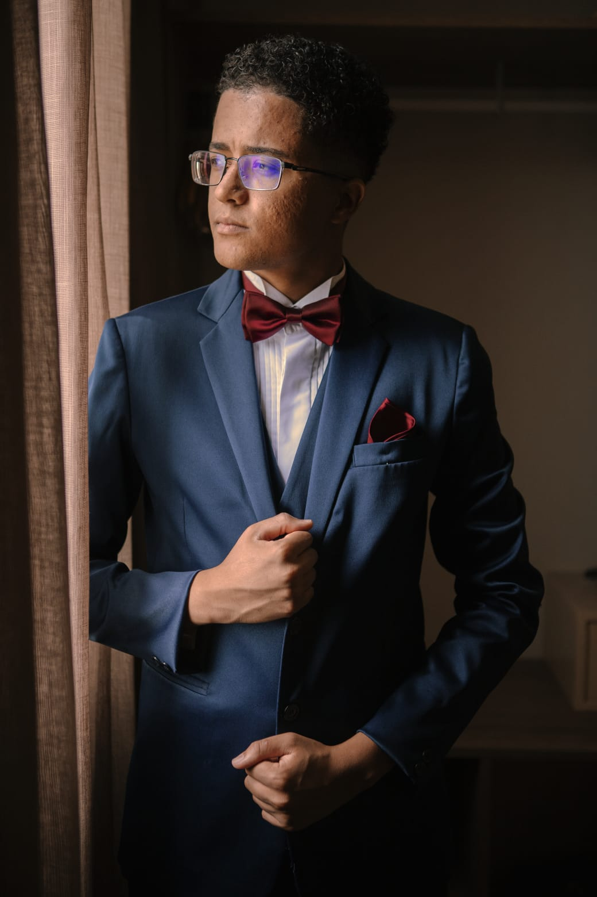

Matheus Miari

Objetivo
Estudante de Engenharia de Software com experiência como Técnico de Enfermagem, aspirante a empreendedor na área de saúde e tecnologia. Busco criar soluções inovadoras que conectem tecnologia e saúde, promovendo acessibilidade e eficiência no cuidado ao paciente.
Educação
- Técnico de Enfermagem - Escola de Enfermagem Stella Maris
- Bacharel em Engenharia de Software - UNINTER (2024-2028)
Experiência
- Técnico de Enfermagem - BP: Beneficiencia Portuguesa de São Paulo
- 07/23 - Atualmente
- Administração de medicamentos
- Aferição de Sinais vitais
- Engenharia de Software
- Projetos Freelancer
- Landing pages
- Ecommerce
- Sites institucionais
Habilidades
Certificações
Hobbies
- Jogos Competitivos
- Viagem
- Passeios
Contato